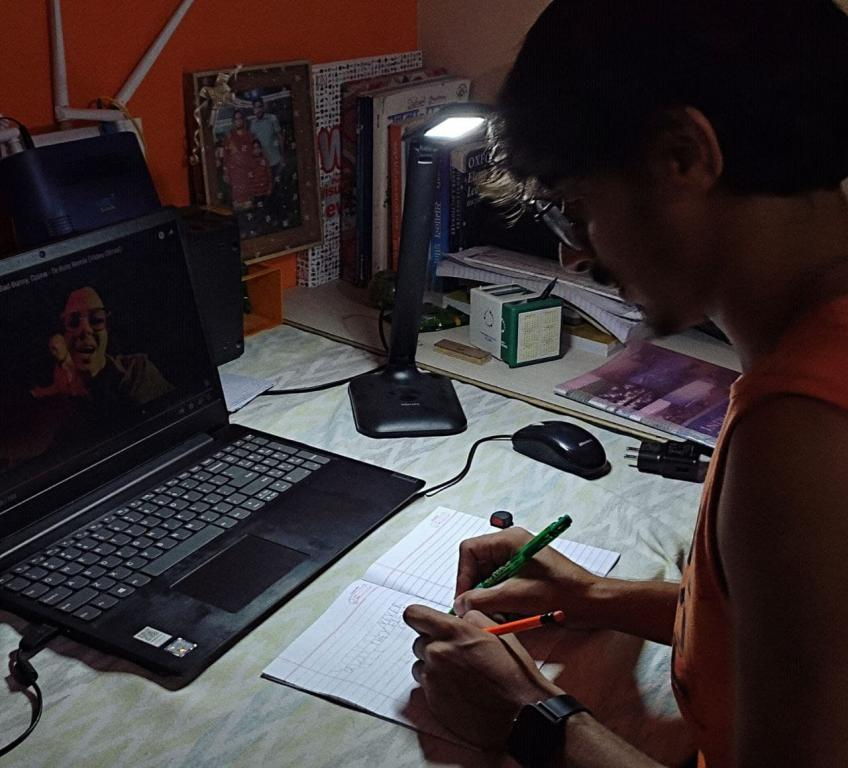
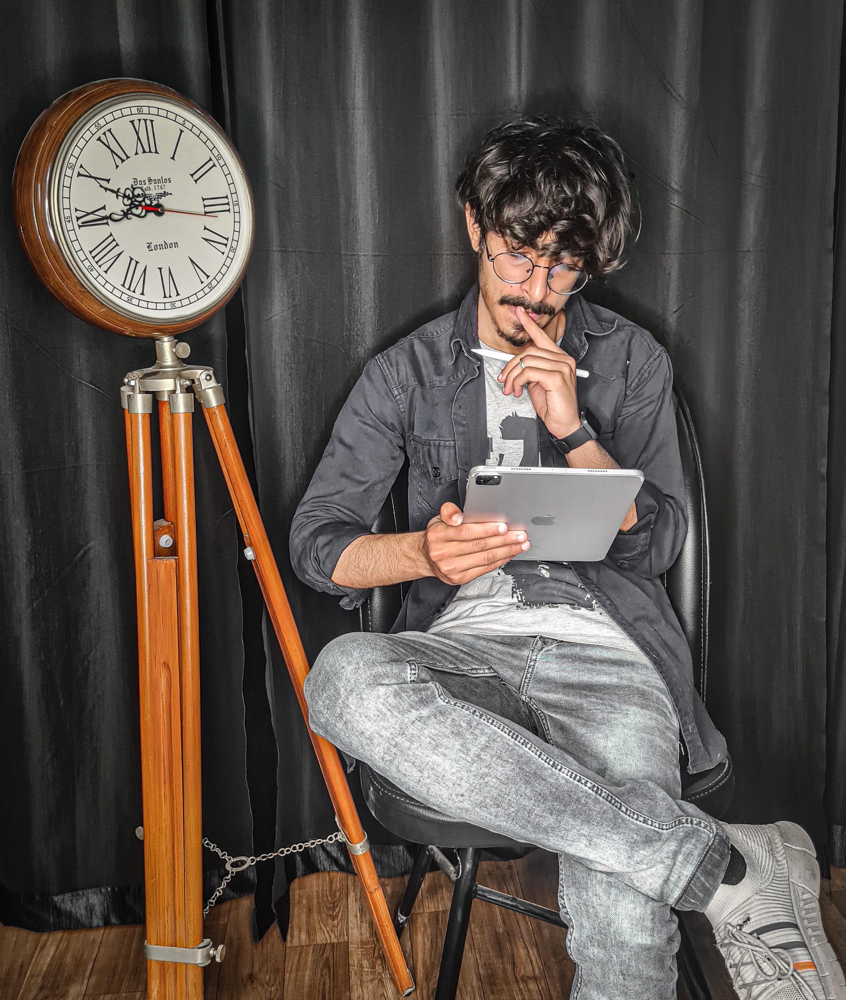

Hey,
I'm Lovish Bhatia aka Lvy, I'm a

नमन्ति फलिनो वॄक्षा नमन्ति गुणिनो जना: |
शुष्ककाष्ठश्च मूर्खश्च न नमन्ति कदाचन ||
The branches of a tree laden with fruit bend downward
just as the highly cultivated persons bow down out of respect to others.
The unwise (murkha), however, are like the dry log that never bends.
Abacus
My foremost achievement was in abacus, I was the second runner in my state when I was in 7th standard and
was about 11 years.
The abacus (plural abaci or abacuses), also called a counting frame, is a calculating tool that has been
used since ancient times.
Nowadays it is taught to kids to increase their brainpower and calculation, I also taught around 11
students but due to time constraints I had to leave the teaching

Flute
"Want to calm down the mind and the soul, Listen to flute, want to relax the body and soul play the
flute" -Lvy
A flute is an aerophone or reedless wind instrument that produces its sound from the flow of air across
an opening,
flutes are categorized as edge-blown aerophones. They notably promote good posture, proper and healthy
breathing, core strength and control, and finger dexterity.
From the desire of buying a Guitar to show off to buying a flute with my first project, this change
occurred due to a series named
"Bandish Bandits", focusing on mixing Indian classical music and today's trending pop music.
Ambidextrous
Like reading the term, being Ambidextrous is moderately difficult.
Ambidexterity is the ability to use both the right and left hand equally well.
My abacus teacher used to dictate words that we have to write with the left hand, she used to say this
will activate your right side of the brain
responsible for creativity. This and Virus from 3 idiots were my inspiration to become ambidextrous.

Fitness
Fitness is like a relationship, you can't cheat and expect it to work.
Doing exercises, staying fit was in my genes and the surroundings I live in. The pain when you feel
while exercising is the
a feeling which makes your brain aware to live life, to be present at the moment.
By the way, I like cycling a lot.üö¥‚Äç‚ôÇÔ∏è
Reading
The famous quote "A reader Lives a thousand lives before he dies. The man who never reads lives only
one."
My roommate was a lawyer, he had a mountain of books, literally a mountain of books, and so the
knowledge, I also want to have
that kind of mountain of my own, and that's where I started reading books and novels, maybe my
inspiration was a bit weird but it was great
and change the way I used to think, made me more open-minded and easily absorb things.

Writting
"Writing is the best way to talk without being interrupted", Nowadays people write a lot, not on paper
but on social media and while chatting.
I am a beginner writer, I just rhyme the words, sometimes it results bad and sometimes great.

Languages/Culture
"Culture is widening of the mind and the soul". Learning different languages and Cultures can help one to
understand the true
the personality of human beings.
Currently, I am Learning Sanskrit, Japanese, Punjabi and French.
Sanskrit, because it is one of the oldest languages and all Hindu scriptures are written in
Sanskrit.
Japanese, because I like their culture and it's like a whole new concept for the brain to digest.
Punjabi, Honestly saying I don't like Punjabi but it's a great language and my ancestors and friends are
Punjabi. Punjabis are Great.
French, No reason for French, accompanying Friend, that's it.
.jpg)
Drawing
"Drawing things makes them seem more real and makes me feel more alive".
I started drawing while I was in 11th standard.